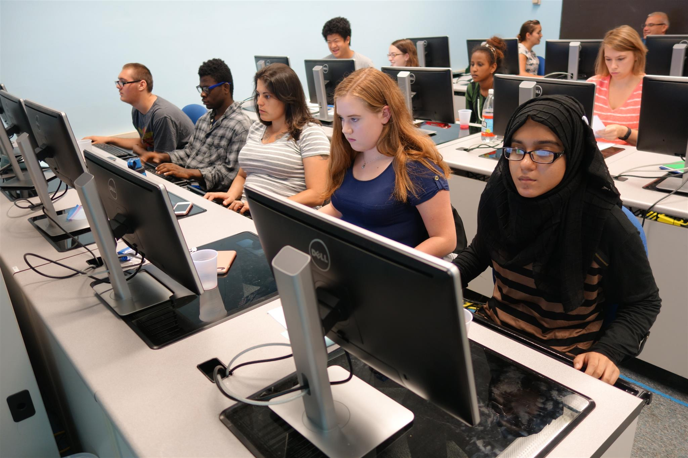

Geography Innovative Technology Experiences for Students and Teachers

This project will advance efforts of the Innovative Technology Experiences for Students and Teachers (ITEST) program to better understand and promote practices that increase students' motivations and capacities to pursue careers in fields of science, technology, engineering, or mathematics (STEM) by its focus on geotechnology (also called GIS or geospatial information systems) careers. The programmatic goal of this project is to prepare teachers to engage middle and high schools students in high-needs and high-potential school districts with cutting-edge web GIS knowledge and skills in order to motivate students to pursue formal school-based and informal out-of-school educational experiences. Project research, guided by social-cognitive career development theory and other work, will investigate what programmatic experiences contribute to student motivation and cognitive gains and what factors contribute to teacher integration of GIS content into the school curriculum.
During three years of the project, the project will offer a summer teacher workshop and a student GIS summer camp each year, The camp will include field trips to GIS-related industry and government agencies, supported by mentors from these organizations. The workshop and camp will support teachers and students in learning GIS concepts and skills. Teachers will also learn approaches to integrate GIS- and career-related in STEM and social studies classes. Students who attended the summer camp will be supported in organizing a GIS after-school club. This project will research one of the guiding questions of the ITEST program: What coherent sets of experiences effectively and efficiently support student competency, motivation and persistence for productive participation in the STEM-related workforce of today and the future? The project will use mixed methods research design including a quasi-experimental study. Research findings from this project will help educators better understand and address the context and factors that influence integration of GIS in middle and high school curricula.